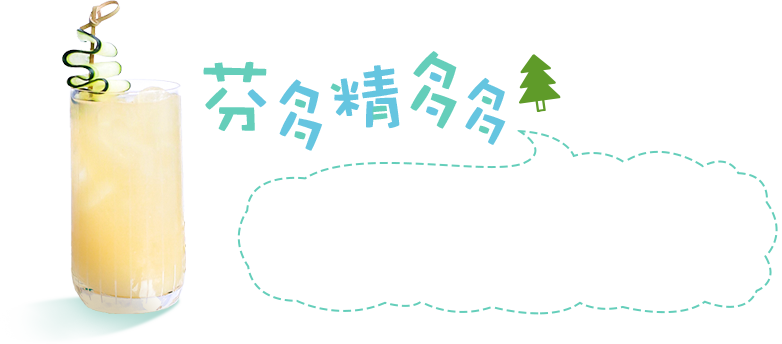
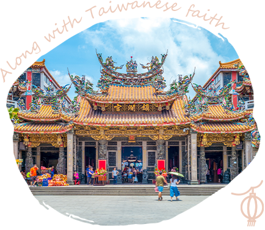
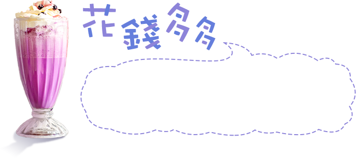

台灣，能玩的要比你想像的還要「多更多」，今年夏天就來趟不一樣的玩法
東南旅遊精心特搖「多多」涼飲，出乎意料的有趣新鮮。
快來決定好你的「夏日多多」，乾杯！
- 毛寵多多
- 鹹水多多
- Kitty多多
- 司馬多多
- 芬多精多多
- 鐵馬多多
- 天后多多
- 花錢多多
- 和運多多

- 毛寵多多
- 鹹水多多
- Kitty多多
- 司馬多多
- 芬多精多多
- 鐵馬多多
- 天后多多
- 花錢多多
- 和運多多

毛爸毛媽們看過來，帶毛小孩出門可以很EASY， 東南寵物巴士、友善寵物餐廳、寵物互動行程， 跟著東南一起帶家中萌寵出門溜溜，Let's Go ！

每到夏天我要去海邊~去海邊！踏踏浪，乘著雙體帆船，迎向海風吹拂，釋放屬於海島子民的熱情，更多與海不同的玩法，就來一杯鹹水多多！

當，環島列車遇上哈囉 Kitty，蹦出新滋味， 還有自選在地行程，多元組合、彈性兼俱。 你~~怎能不愛上凱蒂貓~~~貓~~~貓~~

常聽人說司馬庫斯的美，總該找時間親身體驗， 這裡有原始的聚落、原始的星空、原始的巨木及 原始的樂土，走進司馬庫斯找一份可貴的簡單。


遠離塵世喧囂，步入自然沐浴森林的體驗， 陽光灑落綠葉與樹木之間，吸一口充斥的芬多精， 提神醒腦，又可以繼續為人生奮鬥。

生活步調過得太快，彷彿沒有一刻能夠喘息。 種花的阿武說：世界越快，心則慢。找一份慢、 找份自在，那就牽起久未輪轉的鐵馬，出發吧！

媽祖平安護照，全民奮起集章祈福，
前進在地媽祖廟，走訪台灣當地美景，
動起來！每分每刻都是感動。


我們否認來自盤子國，我們只想追求更好的假期 一分錢一分貨，是我們的中心思想； 眼界的不同，讓我們享受高端、成就高端。


享受自駕旅遊，隨時出發！住宿問題免煩惱， 和運假期讓您租車、訂房一次搞定， 多出來的時間，就與家人留下更多美好回憶！